Specialty coffee · Lausanne
Le café, pris au sérieux.
Grains de spécialité, matcha, chai maison et pâtisseries du jour, avenue d'Ouchy 16. Ouvert tous les jours.
Specialty coffee · Lausanne
Grains de spécialité, matcha, chai maison et pâtisseries du jour, avenue d'Ouchy 16. Ouvert tous les jours.
Chaque tasse commence ici : des grains fraîchement torréfiés, broyés juste avant l'extraction.
Extraction lente, lait soyeux, latte art tracé à la main. Le même soin pour chaque tasse.
Sur le chemin d'Ouchy, à deux minutes de la gare. Venez comme vous êtes.
Les incontournables, d'après les habitués. Les prix sont affichés au comptoir.
Brownies, cookies, cakes et banana bread préparés chaque jour.
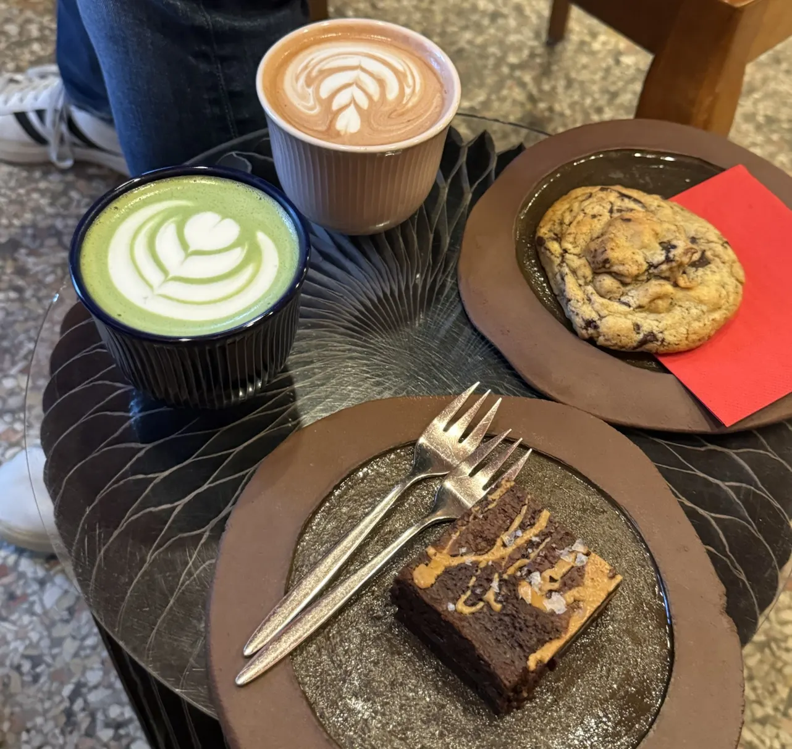
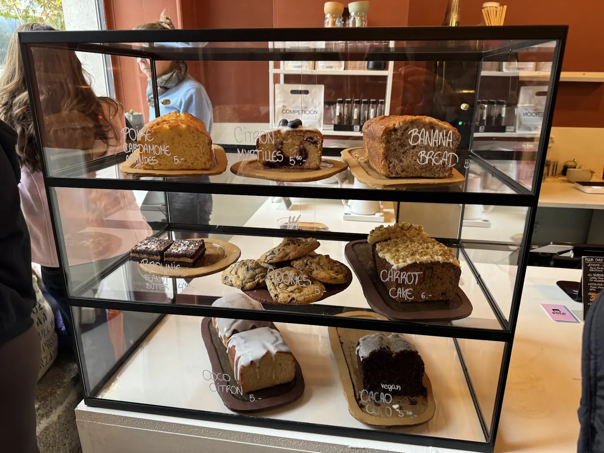
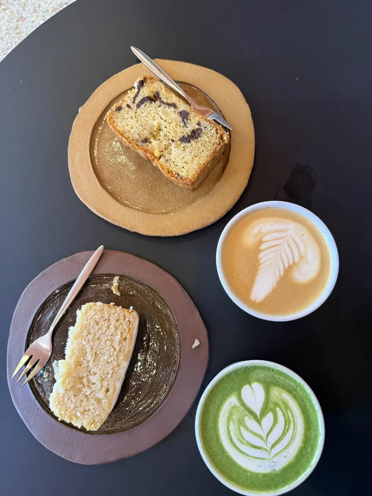
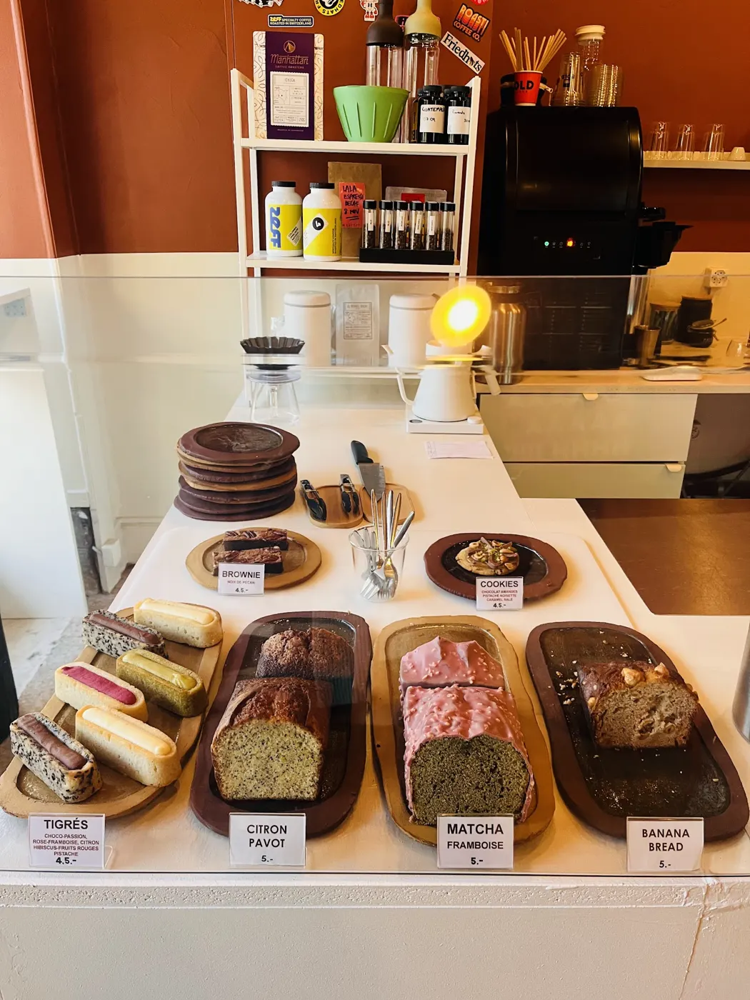
Deux ans de cafés, de fidèles et de fêtes partagées. L'équipe vise maintenant une place parmi les meilleurs coffee shops de Suisse.
Infos pratiques : pas de wifi, pour profiter du moment. Sur place, à emporter et en livraison.
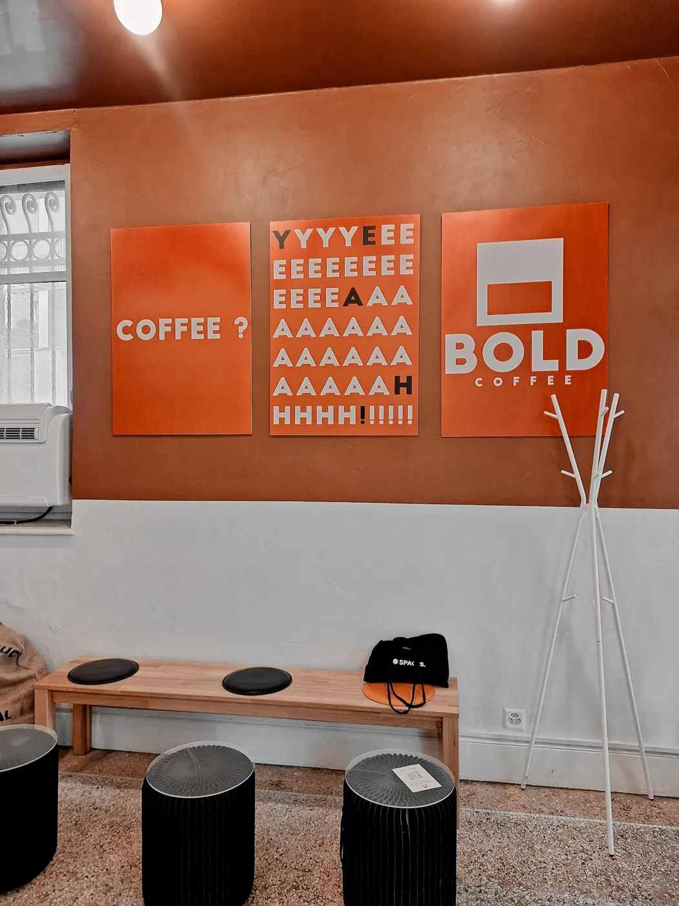
« Sans hésitation, les meilleurs cafés de la ville ! Et en ce moment, leur café de saison au gingembre est juste AMAZING ! »Nabila Harfi, avis Google
« Je viens surtout pour le chai, très bon et fait maison. C'est aussi ici que j'ai aimé le matcha pour la première fois, celui à la vanille est top, sans rien d'artificiel »Elizabeth Bermudez, avis Google
« Je passe souvent chez Bold avant de descendre à Ouchy. Le café est excellent, les petites choses à manger sont très bonnes et l'ambiance est vraiment agréable. »Albert Grajales, avis Google
« Le personnel est très sympa, ils accueillent les gens en souriant. C'était un réel plaisir de prendre du temps dans ce café dans la matinée d'un dimanche. »Lily, avis Google
Murs terracotta, latte art et lumière douce. Faites glisser.
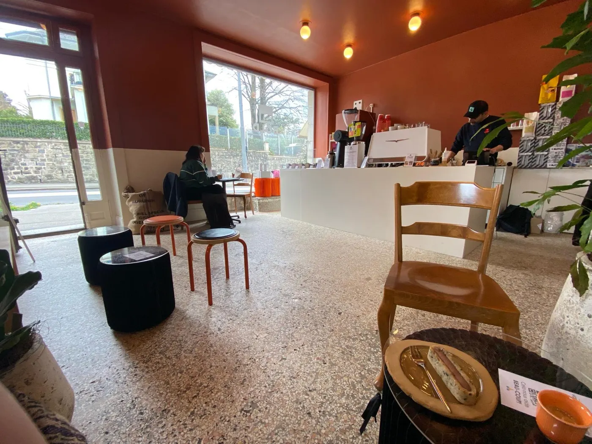
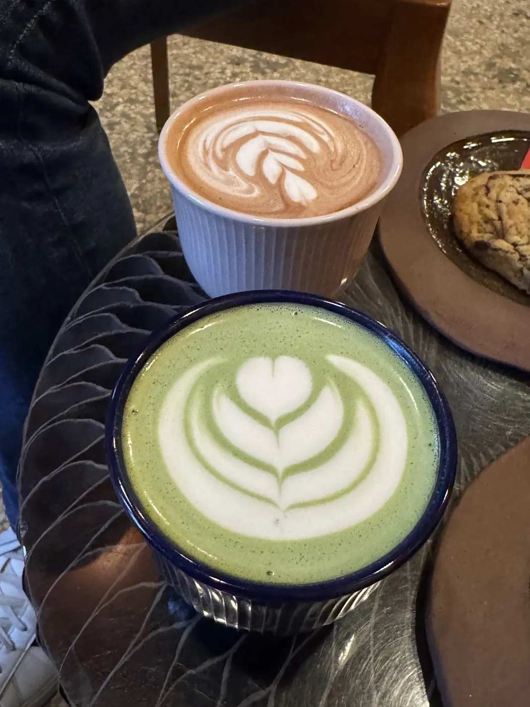
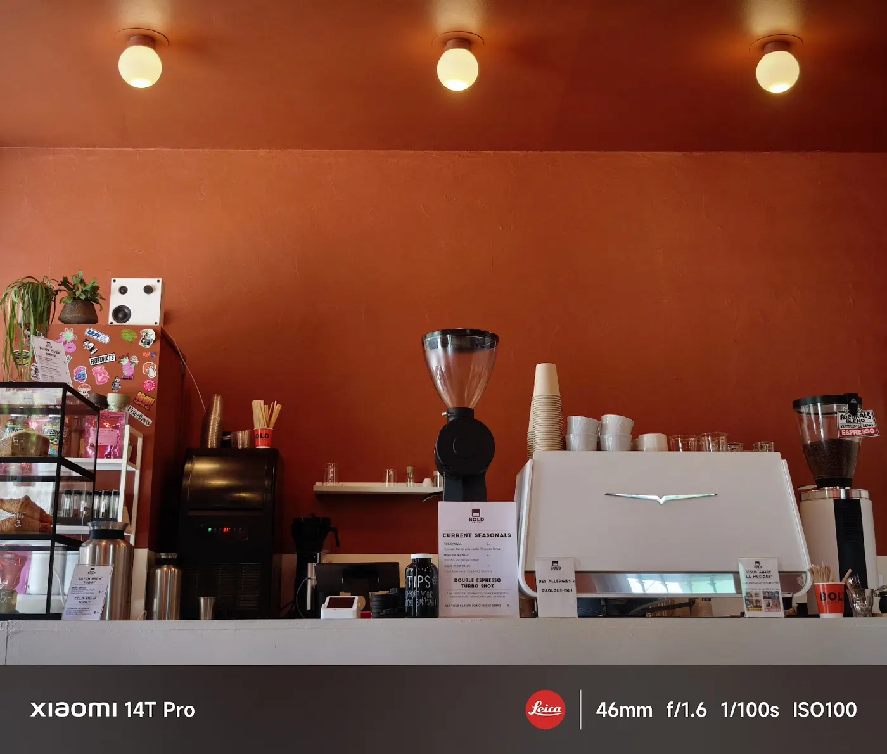
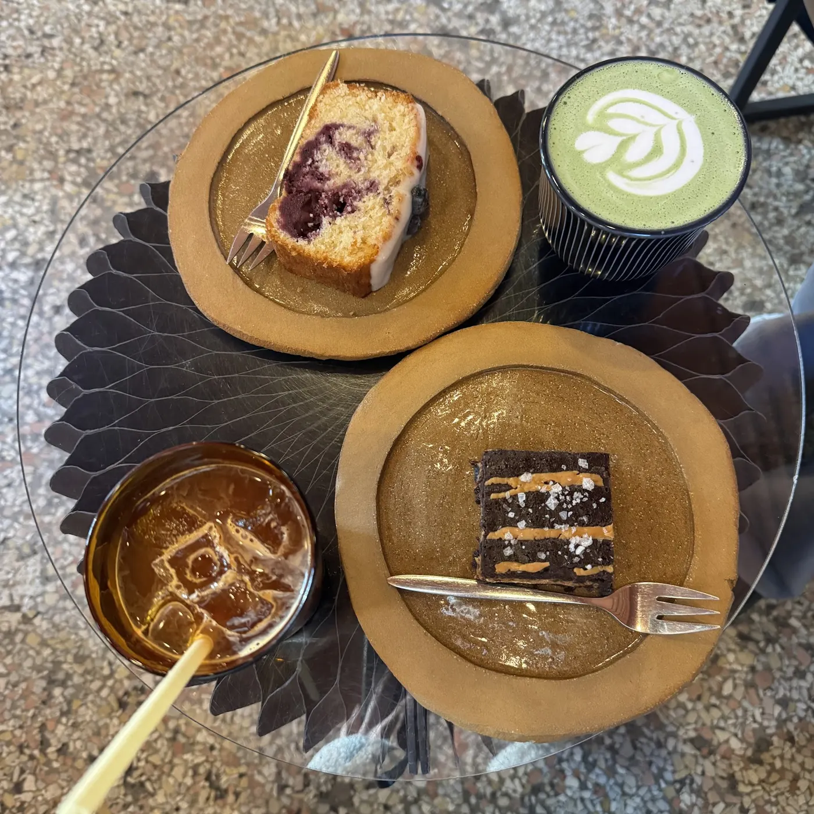
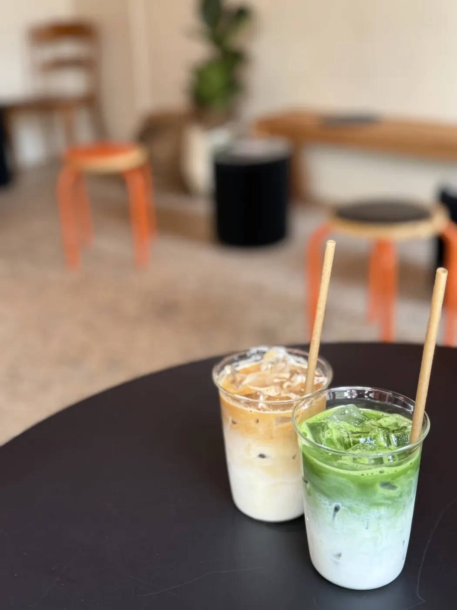
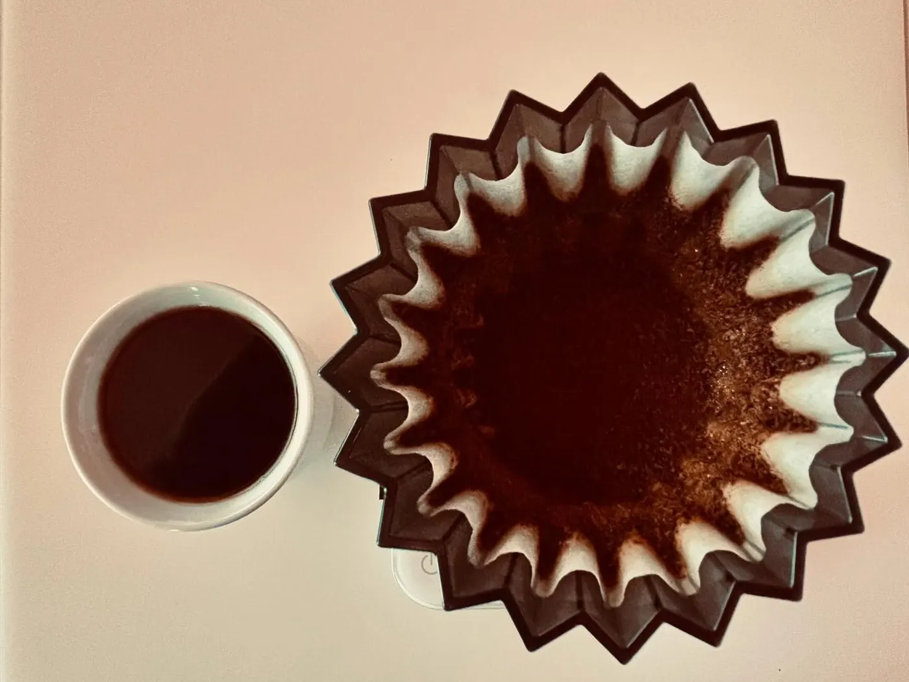
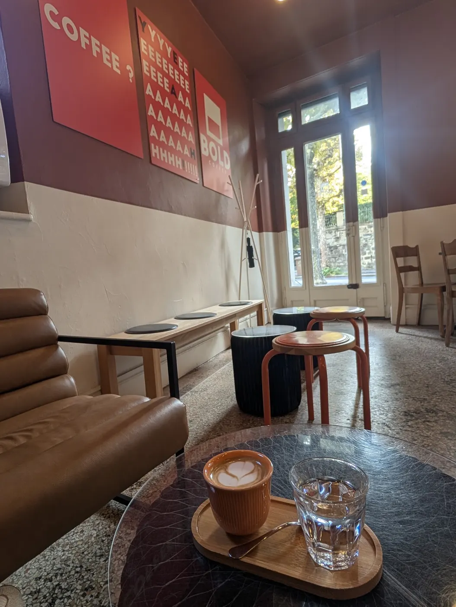
Horaires
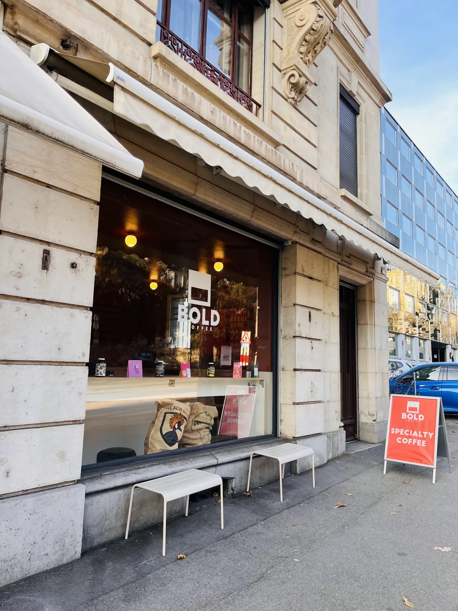
Avenue d'Ouchy 16Tous les jours dès 7h en semaine, 9h le week-end.
Itinéraire →